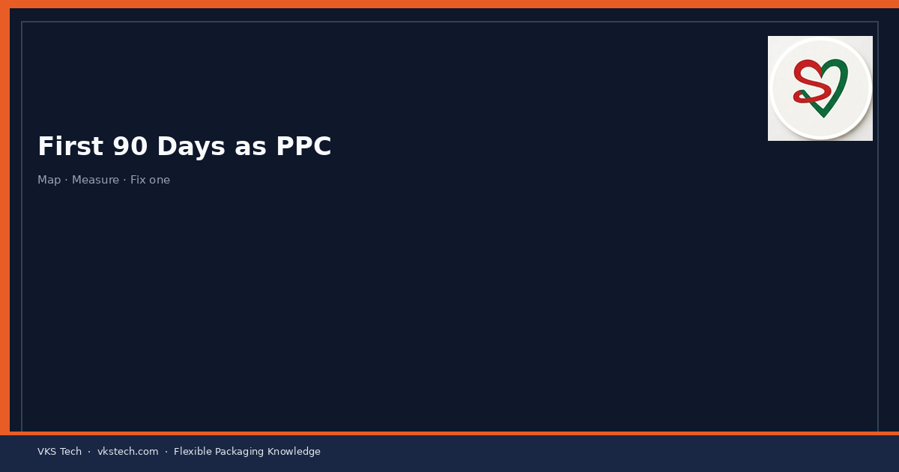
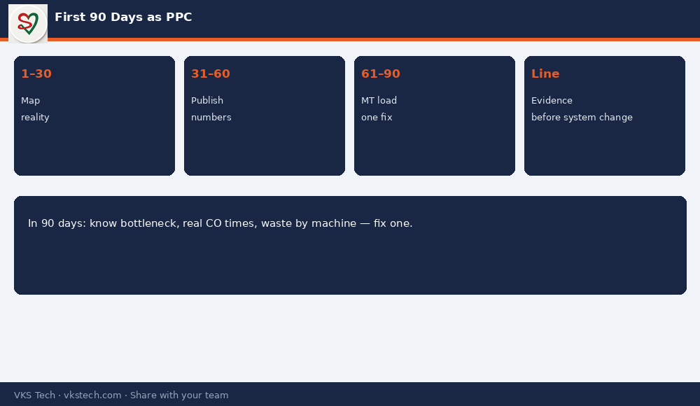

🗓️ Your First 90 Days as PPC in a Converting Plant: Listen, Measure, Then Change the Plan — Not the Other Way Around.
📖 12-min read · Career · New PPC / Planning Heads
New PPCs often try to “fix the system” in week one. The plants that improve faster spend the first month mapping reality: real changeover times, real bottlenecks, real wastage by machine, and which customer dates are already broken. Then they change the plan with evidence.
📌 90-Day Arc
- Days 1–30: Map machines, flows, changeover times, wastage sources, key customers
- Days 31–60: Publish machine-wise waste & efficiency; fix one painful changeover family
- Days 61–90: Capacity vs load in MT; honest OTIF; one bottleneck improvement closed

💡 Career line: “In 90 days I will know the bottleneck, the real changeover times, and the wastage by machine — and I will have fixed one of them with the team.”
Series 64–75 complete · Operations & PPC Deep Dive
🗓️ कन्वर्टिंग प्लांट में PPC के पहले 90 दिन: पहले सुनें और मापें — फिर प्लान बदलें।
📖 12-मिनट पढ़ें · करियर · नए PPC
📌 90-दिन का आर्क
- 1–30: मशीन, फ्लो, चेंजओवर, वेस्टेज, ग्राहक मैप
- 31–60: मशीन-वाइज नंबर; एक दर्दनाक चेंजओवर परिवार सुधार
- 61–90: MT में क्षमता vs लोड; ईमानदार OTIF; एक बॉटलनेक बंद
💡 करियर लाइन: “90 दिनों में मुझे बॉटलनेक, असली चेंजओवर समय और मशीन-वाइज वेस्टेज पता होगा — और टीम के साथ एक सुधार बंद होगा।”